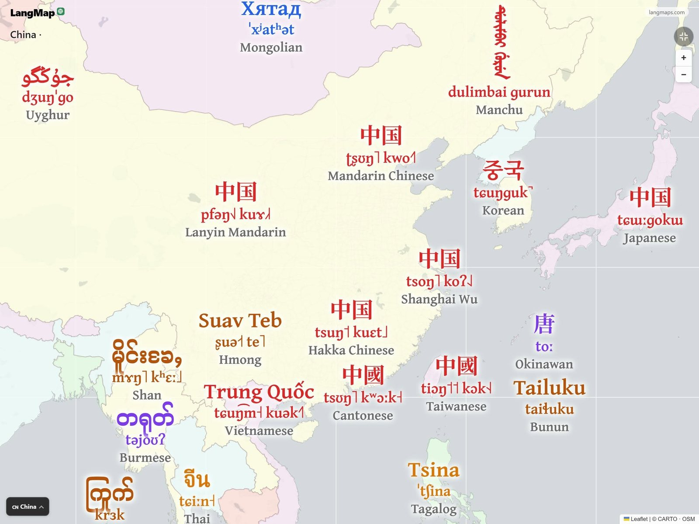

What does your language call China?
- Some languages call it by its own name.
- Some may remember an empire from more than 2,000 years ago.
- Others still call it by the name of a people who ruled northern China around 1,000 years ago.

Contents
The long name
Today, the country's official name is:
中华人民共和国
Zhōnghuá Rénmín Gònghéguó
People's Republic of China
Around East Asia, this same formal name takes some interesting forms.
Japanese:
中華人民共和国
Chūka Jinmin Kyōwakoku
Korean:
중화인민공화국
Junghwa Inmin Gonghwaguk
Vietnamese:
Cộng hòa Nhân dân Trung Hoa
The components are essentially the same, though Vietnamese arranges them according to Vietnamese grammar.
But shorten the name to simply "China", and suddenly the world splits apart.
1. 中國: Call it what China calls itself
Chinese: 中国 / 中國 (Zhōngguó)
Japanese: 中国 (Chūgoku)
Korean: 중국 (Jungguk)
Vietnamese: Trung Quốc
Same two characters:
中國
Literally, something like "central country" or "middle kingdom."
Different languages give the characters their own historical pronunciations.
This is the familiar pattern across much of the old Chinese-character cultural sphere.
But step outside it, and the name changes completely.
2. China: Perhaps a memory of Qin
English: China
French: Chine
Italian: Cina
Persian: چین (Chīn)
Arabic: الصين (al-Ṣīn)
Ancient Sanskrit: चीन (Cīna)
These forms belong to a very old family of names stretching from South and West Asia into Europe.
Their ultimate origin is still debated.
But one of the most influential explanations connects them with:
秦 (Qín)
The state that unified China in 221 BC and established the first Qin imperial dynasty.
The dynasty lasted only about fifteen years, from 221 to 206 BC.
Yet the name of Qin may have traveled much farther and survived much longer than the empire itself.
The connection is plausible, but not definitively proven. Scholars have debated the early pronunciation of Qin, the dating of Sanskrit Cīna, and other possible origins.
Still, imagine the possibility.
One of the world's most common names for China may preserve the echo of a dynasty that disappeared more than 2,200 years ago.
And there is another linguistic fossil hiding in English:
Sino-
As in:
Sino-Japanese
Sino-Tibetan
Sinology
These words belong to the same broad historical family of names associated with Sin, Sina, and China.
But travel north across Eurasia, and suddenly Qin disappears.
Another empire takes its place.
3. Russia and Central Asia remember the Khitans
Russian: Китай (Kitay)
Mongolian: Хятад (Khyatad)
Kazakh: Қытай (Qytai)
Uzbek: Xitoy
These are not forms of the familiar China / Chin / Sin name.
They go back to:
Khitan / 契丹
The Khitans were a people who established the Liao empire in the early 10th century.
Their empire ruled northern China and large areas of Inner Asia until 1125.
Through political power, trade, and contact along the northern routes of Eurasia, the name of this people became associated with the land they ruled.
Over time, it spread as a name for China more generally.
The Khitan name outlived the Khitans' empire.
It survived the fall of the Liao.
And it remains the everyday name for China in Russian, Mongolian, and several Central Asian languages today.
Cathay
But here is an even more surprising connection.
English once knew this China, too.
Cathay
The old European name for China, familiar from medieval travel accounts, is another descendant of the Khitan name.
So English Cathay and Russian Китай are distant linguistic relatives.
Same country.
Same ancient ethnonym.
Two very different journeys across Eurasia.
For a time, some Europeans even imagined Cathay and China as two different places.
Names had traveled so far along separate routes that their common destination was no longer obvious.
But Qin and Khitan are not the only historical names preserved in the world's languages.
4. And then there are the outliers
Some names preserve still other ways of seeing China.
Manchu, the language of the rulers of the Qing dynasty, used:
ᡩᡠᠯᡳᠮᠪᠠᡳ ᡤᡠᡵᡠᠨ
Dulimbai gurun
"The central country"
Rather than borrowing the sound of 中國, this expression translates its meaning.
Dulimba means "center" or "middle," while gurun means "state" or "country."
The expression was used in Qing-era documents, including diplomatic contexts.
It is a remarkable parallel to Chinese 中國.
Tibetan has another traditional name:
རྒྱ་ནག
Rgya nag
Often interpreted literally as something like "Black China."
The historical meaning of the expression is more complex than a simple color label, but it belongs to a naming tradition quite different from China or Khitan.
And then there is 唐, the name of the Tang dynasty.
In Japanese historical usage, 唐 (Tō or Kara, depending on the word and context) could refer to China long after the Tang dynasty had disappeared.
This association was especially visible in the Ryukyu Kingdom, whose long relationship with China shaped its diplomacy, commerce, and cultural vocabulary.
Ryukyuan historical expressions such as 唐人 and 唐名 preserve that connection.
A dynasty that ended in 907 continued to leave its name on China-related traditions centuries later.
So we have yet another historical memory:
唐 (Tang)
Not Qin.
Not Khitan.
Another dynasty, another chapter of history.
One country, several histories
Put these names on a map, and something remarkable appears.
| Where | Names | Memory |
|---|---|---|
| East Asia | 中國, 中国, 중국, Trung Quốc | China's own name |
| Europe and much of South and West Asia | China, Chine, Cina, Chīn, Ṣīn | perhaps Qin |
| Russia and much of Central Asia | Kitay, Khyatad, Qytai, Xitoy | the Khitans |
| Historical Ryukyu and Japan | 唐 | the Tang |
| Manchu | "The central country" | a translation |
| Tibetan | Rgya nag | a tradition of its own |
These are not simply different pronunciations of one name.
They preserve different historical relationships with the same place.
One region adopted China's own name.
Another may remember Qin.
Another remembers the Khitans.
Another preserved Tang.
And others translated the concept of China or developed entirely different names.
A dynasty can disappear.
An empire can collapse.
A people can lose its political power.
But its name may continue traveling for centuries, carried by merchants, diplomats, travelers, and ordinary speakers.
Sometimes, a language remembers a name long after the people who gave rise to it have vanished from history.
So when you ask:
"What is China called in your language?"
You may also be asking:
"Which chapter of Chinese history did your language remember?"